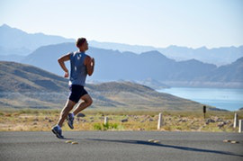
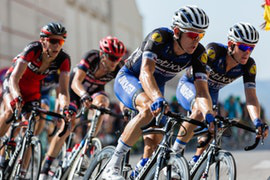
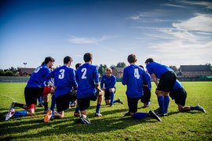
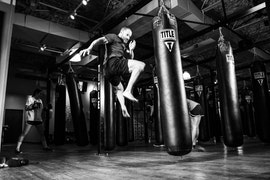
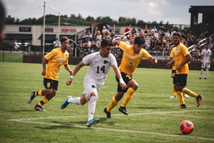
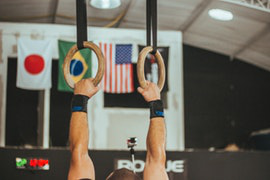
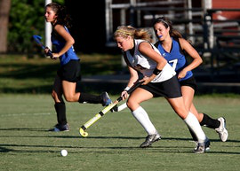
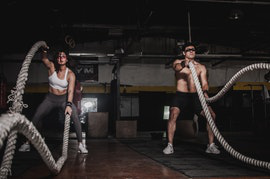

Tennisvereniging HLTC
Dit is de oudste tennisclub van Nederland, de vereniging is opgericht in mei 1885. Hier worden lessen voor alle leeftijden georganiseerd. Ook kun je een baan reserveren op zelf op te spelen.
DSS Honk- en Softbalvereniging
DSS is een honk- en softbalverening, deze verening wil graag dat sporten iets is om te doen voor je plezier,
Fitparck
Getraind of ongetraind, jong of oud, iedereen is welkom bij FitParck. Sporten doe je gezellig in groepsverband, lekker buiten, bij jou in de buurt. Onder leiding van professionele trainers.Welke buitenactiviteiten ga jij met fitparck doen?
Velove vrouwen wielrenverening
VELOVE is een netwerk van ruim 150 wielrennende vrouwen van allerlei leeftijden en niveaus; van net startende rensters tot ervaren wedstrijd rensters
SV De Blinkert
Voor handbal, plezier, fanatisme en gezelligheid van jong tot oud ben je bij ons aan het juiste adres. De handbalsport staat voorop, maar daarnaast organiseren we jaarlijks leuke activiteiten voor jong en oud, zoals het Sinterklaasfeest, jeugdkamp, nieuwjaarsborrel, jaarlijkse BBQ en het G-team toernooi.Al sinds 1954 zijn we in Haarlem gevestigd en vandaag de dag de enig overgebleven handbalvereniging in Haarlem.
HWA-rang Dragon
Welke tak van martial art je ook bij ons kiest, we streven altijd naar een gebalanceerd lesprogramma vol met uitdagingen. Hoe gebalanceerder de uitdaging, hoe leuker het immers is om ermee door te gaan! Je kunt instromen wanneer je wilt, op elk niveau! Wil je Mudo leren kijk dan vooral ook even hier hier
FC Kennermerland
Haarlem-Kennemerland Football Club is een jonge en bloeiende voetbalvereniging, ontstaan in 2010. Wij voetballen op het oude Haarlem-complex aan de Sportweg. Naast het historische stadion bestaat ons terrein uit drie velden (waarvan één kunstgras) omringd door het groen van het Noordersportpark. Wij zijn een ambitieuze voetbalclub. Maar hier verdient wel iedere voetballer aandacht, niet alleen de selectieteams.
HLC turnen
Bewegen brengt plezier, het is gezond en het brengt mensen namen.Het streven van HLC is om zo veel mogelijk kinderen, volwassenen en ouderen in Haarlem en omgeving met veel plezier te laten bewegen.
HC Haarlem
De club is opgericht door enthousiaste ouders die voor hun kinderen en zichzelf een hockeyclub dichtbij huis wensten. Sinds 2010 bouwen we aan een moderne familieclub, waar sportiviteit en prestatie hand in hand gaan met gezelligheid en vriendschap. Ons motto is: samen bouwen we aan onze vereniging.
WU DAE
Bij Sportcentrum Wu Dae in Haarlem kun je kiezen uit tien verschillende soorten groepslessen. Deze lessen worden allemaal meerdere keren per week gegeven. Zowel in de ochtend, middag als avond kun je zo kiezen uit meer dan 30 groepslessen in de week. Je krijgt daarbij persoonlijke begeleiding tijdens het sporten van ervaren docenten. Iedereen kan zo op zijn eigen niveau werken aan een gezond en sterk lichaam.